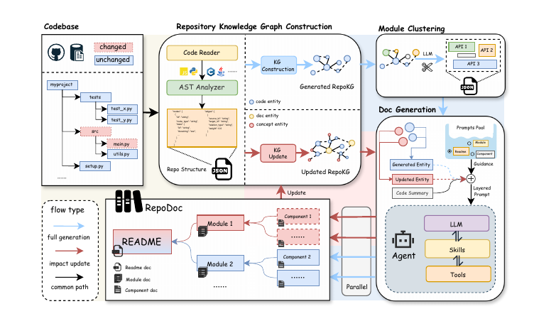

RepoDoc: A Knowledge Graph-Based Framework to Automatic Documentation Generation and Incremental Updates
RepoDoc builds repository knowledge graphs to generate modular documentation, propagate semantic impact, and update affected documents incrementally after code changes.
